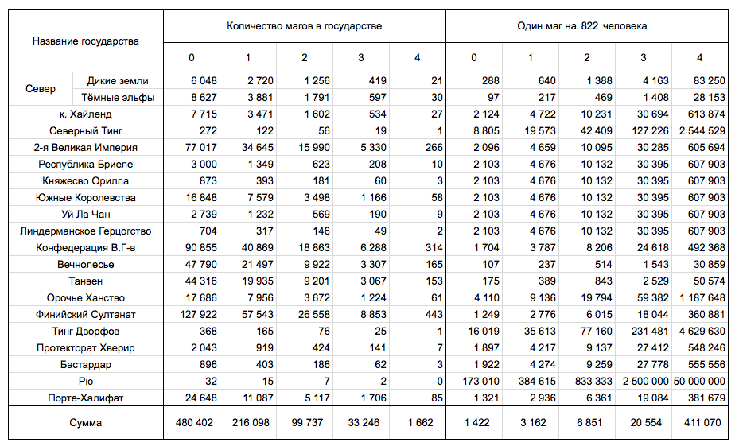

Тауматология
“Многие воспринимают магию по сказкам и мультфильмам. Вот смешной человечек взмахнул палочкой и появилось крем-брюле. На деле все гораздо хуже. В древних трактатах приведены химические формулы, строение аппаратов для генетических опытов, концепции клонирования и расщепления атома. Там можно найти чертежи психотронного оружия и основы тренинга для порабощения человеческих душ. Из всех темных таинств вселенной они обычно выбирают худшие, и плоды их трудов ложатся на человечество тяжелым грузом.” — Марк Лесовский, «Тайна Некрономикона»
Магия в мире Саро занимает очень шаткое и хрупкое положение. Большинство заклинаний было безвозвратно утеряно, подвержено цензуре либо спрятано от недостойных.
Лишь немногие жители планеты обладают склонностью к магии (Магичность имеют порядка 400 000 человек), и еще меньшее количество из них становятся магами. Жесткая конкуренция и взаимная вражда между разными традициями и школами только усугубляет сложившееся положение.

Игромеханическая часть
Ограниченная Порогом магия
За основу берётся система магии Ограниченной Порогом (Treshold-limited Magic, T76).
Порог (Thresholds) — это числовой эквивалент количества энергии, которую любой колдующий может использовать без каких-либо последствий для себя и окружающих, безопасно черпая его из окружающего “магического эфира” (см. Мана, В235).
Напряжение (The power tally) — это сумма всей энергии, потраченной волшебником. Со временем Напряжение восстанавливается.
Катастрофы (Calamities) — последствия, следующие за превышением Напряжения свыше уровня Порога. Смотрите таблицу Катастроф.
Буферные предметы (Buffer Objects) — аналог энергокамней для Ограниченной порогом магии.
Важная часть системы магии то, что Воля отвязана от Интеллекта и уровень заклинаний рассчитывается по формуле “(ИН + Воля) / 2 + Магичность” (см. нашу библиотеку преимуществ и недостатков).
Магичность мира
- Только маги могут творить заклинания.
- Заклинания работают как обычно, в соответствии с правилами, указанными в GURPS Magic.
- В пределах своего института магии волшебник может кастовать заклинание по умолчанию с -6 и -1 за каждый недостающий пререквизит, пройдя успешно проверку навыка Тауматология.
В большинстве областей мира мана однородна и статична, и представляет собой магический эфир. Однако, в некоторых местах эфир может благоприятствовать определенным типам магии, или колебаться со временем. Некоторые мощные заклинания могут сильно исказить или ослабить эфир в данной области.
Маги не могут автоматически чувствовать уровень маны области, но они могут почувствовать изменение при пересечении границы между уровнями. Когда маг пересекает такую границу, делается бросок Восприятие + Магичночть – 3. Добавьте 3, если маг внимательно ищет границу.
Пороги и Катастрофы
У всех живых существ есть свой уровень Порога:
- Для волшебников он равен 10 (+5 за каждый уровень Магичности свыше нулевого).
- Для всех не-магов Порог равен 5.
Если Напряжение волшебника остаётся на уровне его Порога или ниже — всё в порядке.
Если Напряжение перейдёт Порог, то может случиться что-то плохое. На любом ходу, когда маг переходит свой Порог, по любой причине, он должен пройти проверку — сделать бросок по таблице Катастроф (см. ниже). Всё время пока волшебник выше Порога, он также должен делать проверку Катастроф на любом ходу, когда творит заклинание (даже с нулевой стоимостью) или увеличивает Напряжение любым способом включая поддержание заклинания.
Напряжение
У каждого заклинания есть своя энергетическая стоимость. При сотворении заклинания нужно прибавить указанную стоимость к Напряжению. Чем лучше вы знаете заклинание, тем меньше будет увеличиваться Напряжение. Если вы довольно хорошо знаете заклинание, то вы сможете творить его бесплатно.
- Исключение: никогда не уменьшайте стоимость Блокирующих заклинаний (см. Блокирующие заклинания, М12-13).
- Каждое успешно сотворённое заклинание — и каждый критический провал на заклинании — стоит 1 ЕУ, вдобавок к увеличению Напряжения.
Магические ритуалы
Для сотворения заклинаний надо совершить ритуал, который включает в себя жесты и речь. Если вы не можете выполнить ритуал, то вы не можете сотворить заклинание.
- Например, если в ритуале заклинания требуется говорить, то маг не сможет сотворить это заклинание с кляпом, или под заклинанием тишины.
Чем выше ваш уровень в заклинании, тем легче его сотворить. Это занимает меньше времени, требует меньше энергии и более простого ритуала. Для подробностей смотрите список внизу. Во всех случаях «умение», подразумевает базовое умение, а не эффективное.
Умение 9 или меньше
Ритуал: для исполнения ритуальных движений, необходимо, чтобы были свободны две руки и две ноги, а также надо произносить определенные слова силы твердым голосом.
Время: удваивается.
Стоимость: как указано.
Умение 10-14
Ритуал: необходимо сказать несколько тихих слов и сделать жест.
Время: как указано.
Стоимость: как указано.
Умение 15-19
Ритуал: необходимо сказать одно-два слова или сделать небольшой жест (достаточно пары пальцев), но не обязательно и то, и другое. Вы можете передвигаться со скоростью 1 ярд в секунду, пока концентрируетесь.
Время: как указано.
Стоимость: уменьшается на 1.
Умение 20-24
Ритуал: отсутствует! Нужно просто смотреть в одну точку во время концентрации.
Время: вдвое меньше (округляются вверх до следующей секунды). Минимальное — одна секунда.
Стоимость: уменьшается на 2.
Для некоторых заклинаний всегда будет требоваться определенный ритуал. Эти требования перекрывают указанные выше правила. Например, высокий уровень не изменяет стоимости Блокирующих заклинаний (см. М12-13) или время сотворения Метательных заклинаний (см. М12).
Если у волшебника есть время быть особенно аккуратным со своими движениями и произносить заклинание громко и четко, удвоив время сотворения, волшебник получает +1 к своему эффективному умению.
Автоматическая поддержка
Поддерживаемое заклинание всегда автоматически поддерживается, увеличивая Напряжение заклинателя, если волшебник сознательно не откажется от увеличения и не остановит заклинание. Если в этот момент он без сознания или спит, его Напряжение увеличивается ещё один раз, но потом заклинание автоматически заканчивается спустя половину обычного периода поддержки. Заклинание, поддержка которого стоит 0 будет продолжаться неограниченно, не увеличивая Напряжение, даже если заклинатель спит или без сознания, но заклинатель может остановить его в любой момент, ценой +1 к Напряжению. Все поддерживаемые заклинания автоматически заканчиваются, как только заклинатель умирает.
Ограниченное увеличение Напряжения
Волшебник может добавить к своему Напряжению одним заклинанием не больше чем (10 + Магичность) × Порог единиц.
- Например, волшебник с Магичностью 2 может превысить свой Порог не больше чем на 120 единиц ((10 + 2) × 10 = 120), то есть он может сотворить заклинание стоимостью 130 единиц (если его Напряжение было 0).
Восстановление Напряжения
Напряжение волшебника восстанавливается со временем. Скорость восстановление 1d единицы в день, восстановление происходит на рассвете. Волшебник может увеличить свою скорость восстановления, взяв преимущество Быстрое Магическое Восстановление которое даёт +2 единицы в день за уровень.
Ритуалы восстановления
Один из способов восстановления Напряжение это проведение ритуала. В процессе ритуала, жертва, перенимает на себя весь уровень Напряжения волшебника. Жертва получает Напряжение в удвоенном количестве, причем ИН жертвы должен быть выше 6, после чего жертва делает все необходимые броски как при превышении Порога и получить все соответствующие эффекты.
Визуально ритуалы различаются в зависимости от культуры волшебника, но как правило обязательной частью ритуала являются магические символы, пентаграммы или иные знаки начертанные на поверхности, внутри которых происходит само действо ритуала.
Ритуал занимает не менее 1 часа и требует успешного броска навыка Ритуальная магия.
Проверки Катастроф
Проверка Катастрофы проходится броском кубиков с +1 за каждые полные 5 единиц, на которые был превышен Порог волшебника после сотворения заклинания. Катастрофа происходит немедленно, но её последствия не всегда очевидны (см. детали в таблице). Катастрофа обычно не приводит к провалу заклинания. Но если результат проверки Катастрофы имеет значение 29+, то заклинание не срабатывает, если маг не пройдёт проверку Воли со штрафом равным бонусу проверки Катастрофы.
Катастрофы снижают текущее Напряжение волшебника на 1 за каждые 2 полных очка, на которые проверка превосходит 10. Например, результат 17 снижает Напряжение на 3, а также имеет последствия, описанные в таблице.
Таблица Катастроф
Как и с остальными таблицами магических неприятностей, любой, кто пытается вызвать Катастрофу, надеясь получить конкретный результат, увидит, что из этого ничего не выйдет. Магия может показаться обладающей волей и достаточно своенравной, а её Катастрофы — вдвойне таковы. Культы самоубийц, пытающиеся вызвать глобальные проклятья с помощью дикой магии вместо этого обнаружат, что их магические способности не работают. А вот спровоцировать врагов, чтобы они использовали больше магии, чем могут себе позволить — вполне эффективный, хоть и опасный, приём!
Учтите, что относящиеся к Удаче преимущества не могут модифицировать проверки Катастроф (см. “Критические магические провалы и Удача”, ).
- 3-10 — Ничего не происходит — на этот раз.
- 11, 12 — Заклинатель теряет 1к – 2 ЕЖ и страдает от недостатка Кошмары (B144), со значением самоконтроля 9, в течении 1к дней.
- 13 — Заклинатель страдает от недостатка Галлюцинации (Умеренные; B136) в течении 1d дней.
- 14 — Заклинатель страдает от недостатка Галлюцинации (Тяжелые; B126) в течении 1d дней.
- 15 — Заклинатель страдает от недостатка Хронические боли (Умеренная, сложность броска 12, 2 часа; B126) в течении 1к + 1 дней.
- 16 — Заклинатель страдает от недостатка Хронические боли (Умеренная, сложность броска 9, 2 часа; B126) в течении 1к + 2 дней.
- 17 — Заклинатель страдает от недостатка Хронические боли (Серьёзная, сложность броска 9, 2 часа; B126) в течении 1к + 1 дней.
- 18 — Маг получает недостаток на –5 очков. Через 3к дней, он получит возможность выкупить его за 2 очка (он просто исчезнет). Если у него недостаточно очков, или он не хочет тратить их, тогда недостаток становится постоянным и выкупать его нужно за полную стоимость. Любой недостаток возможен — волшебник может стать уродливым, слегка безумным и т. д., по прихоти мастера.
- 19 — Как 18, но недостаток на –10 очков, и цена выкупа 5 очков.
- 20 — Как 18, но недостаток на –15 очков, и цена выкупа 7 очков.
- 21 — Как 15, но длительностью до конца приключения после которого делается бросок Воля + Магичность и в случае провала недостаток становится постоянным.
- 22 — Повторите проверку с тем же модификатором. Результат влияет на случайного спутника волшебника! Если последствия влияют на способности к колдовству, а волшебник не имеет спутников-магов, или если волшебник был в полном одиночестве, тогда проведите две проверки (с тем же модификатором) и примените оба результата к самому волшебнику.
- 23 — Маг навсегда теряет 2к × 2 + 2 очков преимуществ, атрибутов, и/или вторичных характеристик. Потеря определяется случайно, путем нажатия случайной клавиши рояля.
- 24 — Заклинатель становится живым «мана-шрамом»! В радиусе 1к миль вокруг мага, стоимость сотворения и поддержания заклинаний удваивается, а Напряжение перестаёт сбрасываться. Этот эффект длится 3к недель. Так же эффект заканчивается со смертью мага. Враги и нетерпеливые союзники могут принять скоропалительное решение…
- 25 — Маг навсегда теряет способность творить одно заклинание, выбранное случайным образом из его списка заклинаний. Он всё еще знает заклинание, и может использовать его как пререквизит к другим заклинаний, но никогда не сможет его сотворить.
- 26 — Навыки мага на все заклинаниями уменьшаются на 2к + 5. Этот штраф уменьшается со временем по -1 в день
- 27 — Маг стареет на 2к + возраст игрока лет.
- 28 — Чума или проклятие (саранча, бури и т. д.) поражает регион, это продолжается 3d недель. Никто не способен определить, что причина бедствий — маг, но он будет знать, что это его вина. Видя страдания и разрушения, причиной которых был он, добрый волшебник может сойти с ума. И даже жестокому магу это создаст неудобства — и беспокойство, что его всё-таки обвинят в случившемся. Ведущему стоит проявить жестокость и строгость. Так же есть шанс пострадать от этого бедствия лично, например заразиться чумой.
- 29 — Маг навсегда теряет способность колдовать (но не знания о магии). Щедрый ведущий может считать это недостатком Божественное проклятие (Divine Curse, B132); маг получает шанс устранить проблему, ценой “героических” усилий, глубокими и впечатляющими магическими исследованиями.
- 30-39 — Как 29, плюс что-то навсегда изменяет состояние магии в большом регионе вокруг места, где заклятье пошло не так. Может быть, с тех пор все заклинания в этом месте получают штраф –2, или определённый класс заклинаний работает с перебоями. Мастер должен проявить изобретательность! Если кто-то узнает, что волшебник в этом виноват (а на это способна как минимум 5-е отделение Его Императорского Величества канцелярии), то за ним начнут охоту. Они могут подумать, что если убить волшебника, проклятье снимется, может быть они правы… Волшебник не может избавиться от личного эффекта (если он вообще может это сделать!) не сняв проблему с региона, и наоборот.
- 40+ — Как 30–39, в дополнение маг должен сделать проверку ЗД–6. Провал означает, что маг получает отдачу магической энергии и взрывается: он автоматически умирает (получает –10 × ЕЖ) и взрыв наносит (Воля + Магичность) × 10 кубиков дробящего взрывного урона! Успех на ЗД–*6* проверке означает не столь драматическую ситуацию: волшебник получает 2к урона и не взрывается. Если это убьет его, то глобальные изменение начнут исчезать через несколько дней или лет — или остаться, как напоминание его глупости.
При броске свыше 18 волшебник всегда тратит дополнительно 2к6 – 2 **ЕУ.
Сложение эффектов: если волшебник выбрасывает временный эффект, от которого он уже страдает, тогда и количественные штрафы, и длительности эффектов складываются. Если волшебник получает эффект (временный или навсегда), который является версией проблемы, которая у него уже есть, то увеличьте остроту проблемы; уменьшите соответствующий бросок самоконтроля на один шаг, если он есть; или перебросьте, если нельзя сделать ни то, ни другое.
Ауры
Повышающееся Напряжение отражает всё большее искажение метафизических взаимоотношений волшебника и вселенной, что видно любому, кто может видеть магические ауры (используя заклинание Аура или другими способами), но превысив сильно Порог и обычный маг может почуять, что вы заигрались в волшебство. У любого с высоким Напряжением — и особенно у того, кто сильно перешёл свой Порог — будет “искажённая” и хаотичная аура.
У всех волшебников есть уникальный магический “почерк”, следы, которого остаются после каждого применения магии. Чем больше было потрачено энергии на сотворение заклинания, тем дольше будут оставить его видимые следы.
“Заклинания энергии” и дополнительные возможности
Быстрое сотворение: волшебник может уменьшить время сотворения на одну секунду за 4 дополнительных единиц добавляемые к его Напряжению. Этим способом нельзя уменьшить время сотворения до нуля (минимум одна секунда) и он не доступен для церемониальной магии.
ЕУ на энергию: можно тратить ЕУ, чтобы вложить дополнительную энергию в свои заклинания — по цене 3 ЕУ за единицу “магической энергии”, которая не добавляется к Напряжению.
Энергию на навыку заклинания: можно получить +1 к навыку за 20%, +2 за 40%, +3 за 60%, +4 за 100% и каждые дополнительные +1 за еще 100% энергии сверх необходимого. Метательные заклинания могут получать +1 к урону за каждою дополнительную единицу энергии.
Заклинания по умолчанию: волшебник может творить заклинания которые он не знает из своей традиции волшебства по умолчанию с -4 плюс -1 за каждый не достающий прериквизит. После успешного броска навыка Тауматология.
Заклинания энергии. Некоторые заклинания из школы Исцеления работают по-другому у волшебников, которые используют Ограниченную Порогом магию:
- Передать Энергию (Lend Energy) восстанавливает ЕУ объекта, увеличивая Напряжение заклинателя. “Пороговые волшебники” могут сотворить его на себя, восстанавливая свои ЕУ ценой Напряжения.
- Нет относящейся к Порогам версии Восстановления Энергии.
- Поделиться Энергией (Share Energy) позволяет волшебнику передать энергию другому ценой прибавления удвоеного количества к своему Напряжению. Максимально возможно передать 5 единиц (т.е. повысить свое Напряжение на 10) в секунду.
Церемониальная магия
Если волшебник знает заклинание на уровне 15 или выше, и у него есть группа добровольных помощников, то он может создать заклинание, руководя помощниками в хорошо проработанном ритуале, который увеличит силу заклинания и позволит распределить Напряжение среди участников ритуала, соответствуя вкладу каждого. Такая «церемониальная магия» требует много времени, но позволяет творить более мощные заклинания, чем можно позволить себе в одиночку.
У волшебника обязательно должны быть помощники для использования церемониальной магии. Высокое умение не уменьшает время на сотворение, цену или требуемый ритуал.
При использовании церемониальной магии время на сотворение увеличивается в 20 раз, но не менее 1 часа. Энергетическая стоимость не меняется, но помощники принимают часть Напряжения на себя:
- Каждый маг, который знает заклинание на уровне 15+: от 1 до своей магичности.
- Каждый маг, который знает заклинание на уровне 14 и ниже: до 1 очка энергии.
- Каждый наблюдатель, который противодействует сотворению: даёт -5 очков энергии, но добавляет при этом 5 к своему личному Напряжению — впутываться в сотворение заклинания, за или против, несёт риск Катастрофы. Штрафы от всех противодействующих наблюдателей суммируется.
Участники должны поддерживать ритуал по своему собственному добровольному желанию. Создания, чье сознание находится под контролем, не могут достаточно сконцентрировать волю для передачи энергии. Единственный способ увеличить количество получаемой энергии в ритуале против воли существа это жертвоприношение. Принеся жертву возможно воспользоваться полным Порогом жертвы + половину успехов броска навыка Ритуальной Магии без каких-либо последствий для волшебника (кроме моральных разумеется). Существа обладающие магичностью, и как следствие обладающие более высоким Порогом, ценятся как жертвы гораздо выше.
В конце ритуала необходимо выполнить бросок умения, чтобы сотворить заклинание. Учитываются все обычные модификаторы для использования магии и все премии за дополнительную энергию. Независимо от значения броска, вся вложенная энергия тратится в момент броска кубика.
Сумма энергии от всех источников представляет общую доступную энергию. Если это превышает стоимость сотворения, то маг получает премию к умению: +1 за 20% дополнительной энергии, +2 за 40%, +3 за 60%, +4 за 100% и далее +1 за каждые следующие дополнительные 100% требуемой энергии сверх необходимого.
Церемониальную магию тяжело уравновешивать. Значение броска 16 — это всегда провал, 17- 18 — всегда критический провал, даже если эффективный уровень 16+. Все участвующие в ритуале получают Напряжение*, соответствующее их вкладу.
Если заклинание создано, участники могут продолжать отдавать энергию увеличивая свое Напряжение для поддержки заклинания. Состав группы может изменяться, пока ритуал остается непрерывным. Таким образом, церемониальная магия позволяет поддерживать заклинание бесконечно.
Группа помогает сконцентрироваться, поэтому если вы отвлечены во время ритуала, то делайте бросок Воли, вместо Воли-3, чтобы не отвлечься.
На церемониальную магию нельзя воздействовать заклинаниями Желание, Удача или Благословение. Вообще, магия не может воздействовать или предсказывать результат церемониального ритуала.
Магические предметы
Если использование магического предмета не требует затрат ЕУ (“действуют всегда“), зачарованы на Энергию (Power, стр. В480), и т.д. — они работают как описано в GURPS Magic. Если их использование стоить ЕУ, зачарователь решает при создании предмета, будет ли у него собственное Напряжение, или оно “питается” от пользователя. Подробней:
- Предметы добавляют к Напряжению* использующего. У всех, будь они волшебники или нет, есть Напряжение, Порог и Скорость восстановления. От этого все магические предметы являются опасными: если их использовать слишком много, с тобой могут произойти странные вещи! Катастрофы которые отнимают способность творить заклинания могут сделать не-волшебников вместо этого неспособными активировать магические предметы (на усмотрение Мастера). У не-заклинателей более низкий порог, чем у магов равный 5, поскольку магия не часть их природы.
- У предметов своё собственное* Напряжение. У каждого магического предмета со встроенным Буфером есть собственное Напряжение (которое увеличивается каждый раз, когда его используют), Порог и Скорость восстановления. Базовый порог равен 5; Скорость восстановления — половина значения по умолчанию для волшебников (1к-3). Зачарователи могут встроить Буферные предметы в магические предметы, используя правила для “Выделенных” (Dedicated, стр. М70) энергокамней, чтобы увеличить их эффективный Порог и Скорость восстановления. Катастрофы, которые получает предмет могут применяться к предмету или пользователю, как посчитает подходящим Мастер. Этим некоторые предметы заслужили репутацию “проклятых“, в особенности те, что имеют особо низкий Порог*.
Буферные предметы
Буферные предметы — аналог энергокамней (стр. M69-70) для Ограниченной порогом магии. Каждый из них может поглотить часть очков, которые пошли бы в Напряжение волшебника, таким образом увеличивая его эффективный Порог. Заклинание Энергокамень создаёт вместо энергокамней буферные предметы. За каждую единицу энергоёмкости, которую заклинание дало бы камню, оно даёт 2 единицы Буфера. Буферные камни теряют набранное Напряжение с половиной скорости, с которой энергокамни перезаряжают энергию — 1 очко за 2 дня.
Новые преимущества
Увеличеный Порог (Increased Threshold)
5 очков/уровень
Каждый уровень этого преимущества повышает Ваш Порог на 20%. Мастер может разрешить более тонкие градации, с увеличением в 4% за каждый уровень ценой 1 очко персонажа.
Быстрое магическое восстановление (Rapid Magical Recovery)
5 очков/уровень
Каждый уровень этого преимущества позволяет востанавливать на 25% больше Напряжения в день. Мастер может разрешить более тонкие градации, с увеличением в 5% за каждый уровень в 1 очко персонажа.
Более безопасное привышение магии (Safer Magical Excess)
20 очков/уровень
С первым уровнем этого преимущества, Ваши проверки Катастроф получают +1 за каждые 10 очков Напряжения вместо +1 за 5. Каждый дополнительный уровень удваивает эффект: +1 за 20, +1 за 40, +1 за 80 и так далее.
Новые ограничения на Магичность
Волшебники могут взять следующие ограничения на магичность:
Уменьшенный Порог (Reduced Threshold)
-10%/уровень
Каждый уровень этого ограничения уменьшает ваш Порог на 20%. Пять уровней (максимум) делают Порог равным 0! Несовместимо с Повышенным Порогом (см. выше).
Особенно склонен к Катастрофам (Seriously Calamity-Prone)
-10%/уровень
Каждый уровень этого ограничения (максимум четыре) вычитает 1 очко из величины превышения Порога, которая даёт +1 к броскам Катастроф: один уровень +1 за 4 очка; два уровня — +1 за 3 очка; три уровня — +1 за 2 очка; четыре уровня — +1 за 1 очко Напряжения. Это несовместимо с Более безопасным перебором магии (см. выше).
Медленное магическое восстановление (Slower Magical Recovery)
-10%/уровень
Каждый уровень этого ограничения уменьшает вашу Скорость сброса Напряжения на 25%. Четыре уровня (максимум) означают, что вы вообще не можете восстанавливать Напряжение со временем. Это несовместимо с Быстрым Магическим Восстановлением (см. выше).
Распределение школ магии
О школах магии: Каждый адепт, проходящий обучение магическом учреждении, прежде всего проходит специальный обряд посвящения, после которого будущий волшебник приобретает способность к изучению заклинаний этого учреждения.
Процесс обучения занимает годы, достойных кандидатов отбирают и обучают с раннего детства.
Выбрав одину из магических традиций, вы способны изучить заклинания только этой школы. Ниже приведён список доступных школ и их распределения по традициям магии. Также они есть в нашей библиотеке для GCS.
Финийский Султанат
Рубиновая Башня:
Школа Иллюзии (со всеми пререквизитами)
Изумрудная Башня:
Школа Земли (Исключая заклинания: Изменить местность, Истинная земля);
Школа Воды (Исключая заклинания: Проходить сквозь воду, Дышать водой);
Школа Звук.
Аметистовая Башня:
Школа Огня;
Школа Воздуха.
Конфедерация Вольных Городов
Независимый институт магических искусств (НИМИ):
Школа Лечения (Исключая заклинания: Регенерация, Мгновенная регенерация, Молодость, Воскрешение, Прекратить Старение, Приостановить Жизнь);
Школа Общения и понимая (Исключая заклинания: Контроль персоны, Вселение, Поиск в Памяти, Постоянное вселение, Обмен Телами);
Школа Света и Тьмы.
Вторая Великая Империя Человеков
Императорский Университет Магии:
Школа Знаний (Исключая заклинания: Вызов Тени, Древнейшая история, Древняя История);
Школа Звука;
Школа Защиты и предупреждения.
Вечнолесье
Олени:
Школа Животных;
Школа Растений.
Совы:
Заклинания Движения;
Заклинания Контроля тела.